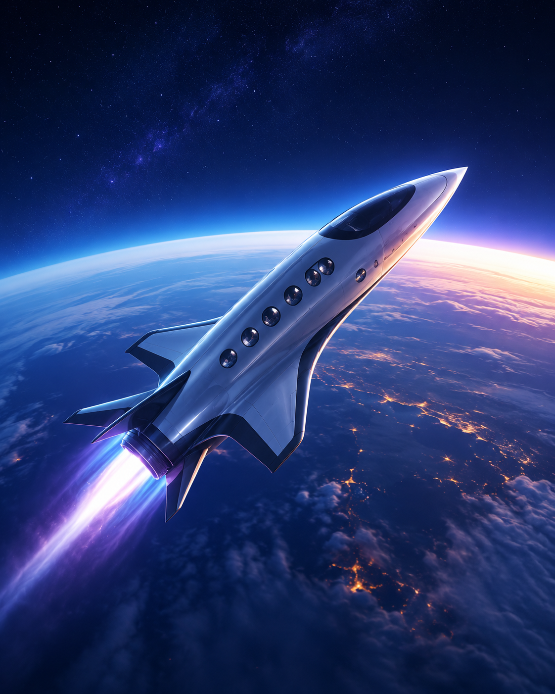

Voo Suborbital
Sinta a emoção de cruzar a fronteira do espaço em uma jornada inesquecível. Você atingirá a linha de Kármán, a 100 km de altitude, onde experimentará alguns minutos de gravidade zero e contemplará a curvatura da Terra contra o negro do espaço.

Órbita da Terra
Dê voltas completas ao redor do nosso planeta a mais de 28.000 km/h. Você verá um nascer e pôr do sol a cada 90 minutos e observará continentes, oceanos e auroras como pouquíssimos seres humanos já tiveram o privilégio de ver.

Estadia Espacial
Hospede-se entre as estrelas em nossa estação orbital de conforto premium. Durante vários dias, você viverá como um astronauta: dormindo flutuando, se alimentando em gravidade zero e admirando a Terra pela janela panorâmica.

Experiência Lunar
Realize o sonho de tocar outro mundo. Viaje até a Lua e caminhe sobre sua superfície empoeirada, deixando suas próprias pegadas onde apenas um punhado de pessoas já esteve. Contemple a Terra surgindo no horizonte lunar.